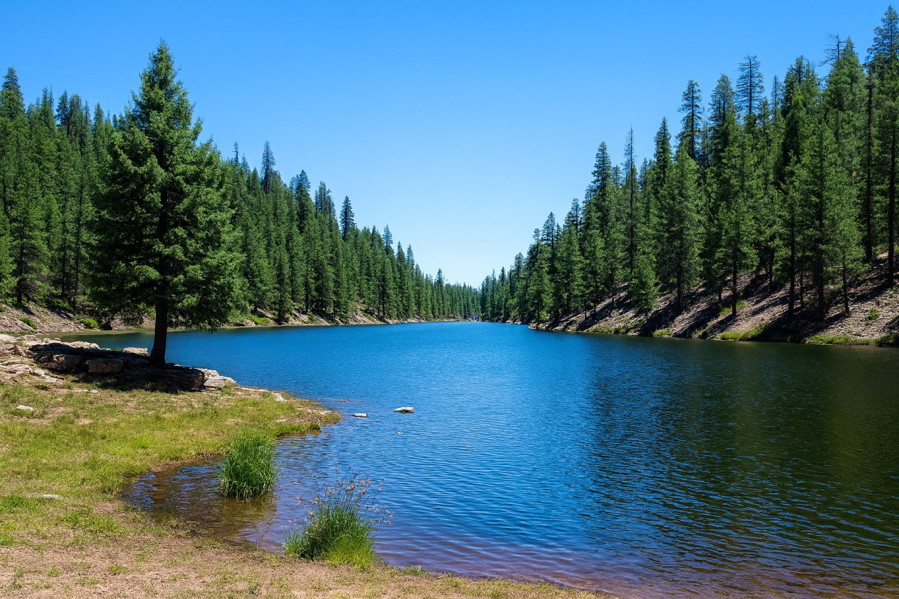
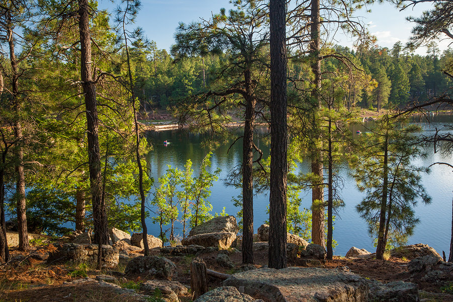
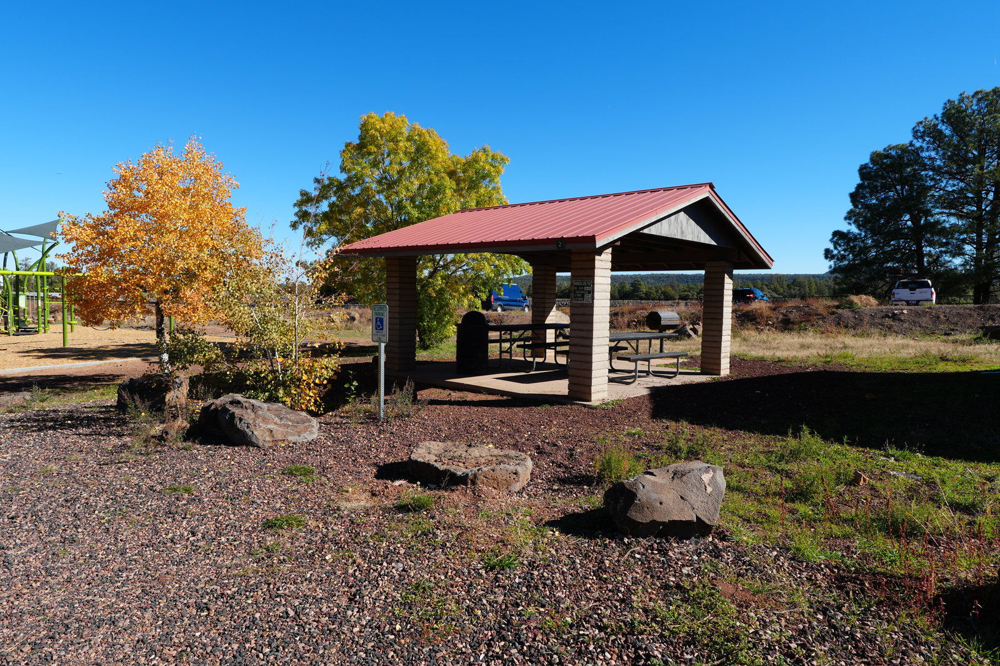

Marshall Lake Campground
Big sky, open meadow, and more breathing room than the busier lake corridor campgrounds.
 By Chris Follin
By Chris FollinROUNDUP
If I had to send someone to an Arizona campsite after one quick conversation, I would start with these. They cover the main lanes: simple Flagstaff weekends, cooler Rim lakes, a dramatic dispersed view, a quiet southern Arizona lake, and an easier White Mountains option.
Arizona camps change fast by elevation, wind, shade, water, and how much setup you want to handle after the drive. I would not pick the same place for a first camp trip, a photo-heavy dispersed weekend, and a late-season lake reset.
Big sky, open meadow, and more breathing room than the busier lake corridor campgrounds.

One of the better water-focused Rim trips when you want less of the full developed-campground feel.

Classic Rim lake camping with easy appeal, pines, and a weekend that still feels good even if the weather turns.

Huge cliff-edge view and one of the more dramatic Arizona camp settings, if conditions cooperate.

A relaxed developed campground with easy pull-ins, a short marina walk, and a weekday feel that makes it easy to settle in.

Lakeside camping with easy town access and enough comfort to keep the logistics from getting annoying.
This is the sorting table I would use before clicking into the detailed camp notes.
| Camp | Best Use | Services | Watch For | Pick When |
|---|---|---|---|---|
| Marshall Lake | Open Flagstaff meadow camp, sunrise, birds, darker skies | Primitive dispersed pull-outs; no water, toilets, or tables | Wind, soft shoreline, changing water levels, no services | You want space near Flagstaff and can be self-contained |
| Bear Canyon Lake | Quieter Rim water trip, fishing, light kayak or SUP time | Primitive lake-area camping and nearby forest options | Carry distance, rougher logistics, limited convenience | You want water without the busiest campground feel |
| Woods Canyon Lake | First Rim lake trip, families, paddling, cool air | Developed loops with tables, rings, vault toilets | Crowds, reservations, food-raiding wildlife, fast weather changes | You want the easiest high-country lake answer |
| Edge of the World | Dispersed rim view, sunrise, dramatic photos | No facilities; dispersed pullouts only | Wind, cliff exposure, rough roads, zero backup on site | The view is the goal and the forecast is calm |
| Lakeview - Parker Canyon Lake | Quiet developed lake weekend in southern Arizona | Tables, rings, vault toilets, trash, seasonal water | Cold nights, changing water availability, longer drive from Phoenix | You want developed comfort without a crowded Rim trip |
| Show Low Lake | White Mountains lake weekend with town backup | Developed campground with water and restrooms in season | Less remote, busier lake use, campground energy | You want easy logistics and a softer landing |
The better choice is usually obvious once you name the tradeoff.
MARSHALL LAKE
Choose: you have your own water, toilet plan, and wind-ready shelter. Skip: you need tables, bathrooms, predictable shoreline, or a tidy developed loop.
BEAR CANYON LAKE
Choose: you can keep the setup light and do not mind extra effort near the lake. Skip: you want easy car-to-table campground convenience.
WOODS CANYON LAKE
Choose: you want pines, water, developed sites, and a simple first lake trip. Skip: you are chasing quiet or hoping to avoid weekend crowds.
EDGE OF THE WORLD
Choose: you are comfortable with dispersed camping, rough roads, and wind planning. Skip: the forecast is gusty, you are arriving late, or anyone in the group is casual about cliffs.
LAKEVIEW
Choose: you want tables, toilets, trash, lake access, and a quieter southern Arizona feel. Skip: you need a short Phoenix drive or guaranteed warm nights.
SHOW LOW LAKE
Choose: you want a White Mountains lake trip with town nearby. Skip: you want the campsite itself to feel remote or unusually scenic.